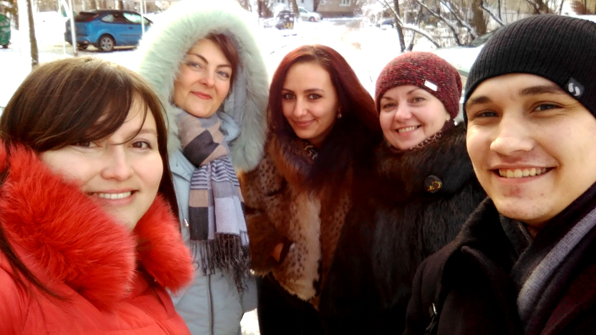

З чого все почалося
З початку другого семестру третього курсу бакалаврату досить одноманітна діяльність в якості студента починала ставати рутинною. З цього моменту у мене з'явилася думка почати займатися чимось ще, додатково. На той момент мені давно вже подобалася іспанська, її вимова.
Серпневим вечором 2017 року я вирішив почати вчити іспанську, при цьому абсолютно не розуміючи у що я вплутуються :) Початок вивчення був дуже захоплюючим і проходив на мотиваційному підйомі. І тут на очі моєї мами потрапила замітка на сайті ДонНТУ про те, що в його стінах, в день мого народження, 23 квітня 2017 року, відкривається російсько-іспанський центр. Ну чим не знак!
Після місяця самостійного вивчення мови мені стало дуже цікаво піти на навчання в групу, тим більше що воно почалося лише кілька місяців тому.
Вже у вересні я заглянув в міжнародний відділ до Джури Сергія Георгійовича. Але виявилося, що центр так і не відкрився, проте одну групу все-таки набрали. Він направив мене до викладача, Анхеліки Рамірес.
Отримавши від неї завдання для того, щоб наздогнати групу, я почав своє більш серйозне вивчення іспанської мови.
На щастя, мені дуже пощастило потрапити в групу з мотивованими людьми, які люблять іспанську і, звичайно ж, з чудовим викладачем, яка є носієм іспанської мови!

Рисунок 1 - Обкладинка зошита

Рисунок 2 - Наша група в листопаді 2017


{kind=link}